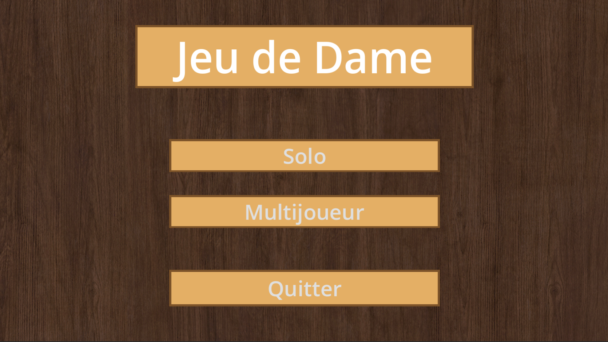

Projet 2 : Jeu de Dames

Description détaillée
Ce projet consiste en un jeu de Dames fonctionnel développé sur le moteur de jeu Godot. Il intègre la modélisation complète du plateau de jeu (le damier), la gestion des déplacements des pions, la logique des prises obligatoires ainsi que la promotion des pions en dames. L'interface permet 2 modes, un où deux joueurs peuvent s'affronter localement en respectant scrupuleusement les règles officielles ou le joueur peut aussi choisir le mode solo permettant d'affronter une IA a différentes échelles de difficultés, allant de l'IA "facile", passant par la "normal" puis enfin la "maître".
Manipulations
Pour lancer le jeu sur votre machine, clonez le dépôt, dézippez le, puis allez sur le moteur de jeu Godot, importez le puis vous aurez juste à appuyer sur le bouton play en haut a droite de l'interface du moteur de jeu pour lancer le jeu de Dames. La taille de la grille s'ajuste a votre écran, vous pouvez choisir en allant sur le mode Solo, l'IA que vous voulez affronter puis quel couleur de pion choisir et il y a même une possibilité que le jeu choississe la couleur de vos pions de manière aléatoire. Enfin si vous voulez affronter un ami, il y a un mode Multijoueur qui permet de jouer une partie en locale.